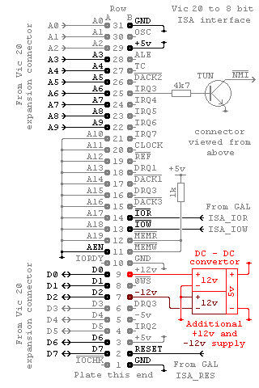
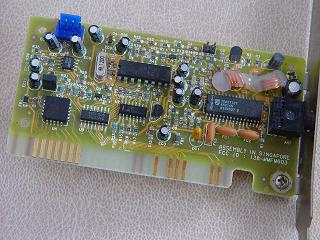
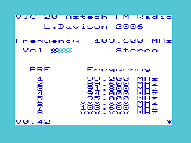

|
|
VIC 20 FM radio by Lee Davison |
|
ISA slot modification.Sorting through the various ISA cards I've collected over the years I found three Aztech ISA FM radio cards. As I have an eight bit ISA slot on my VIC 20 and these cards are eight bit (actually five writeable bits and only two readable bits) I thought I'd make an application to use them.
Apart from the VIC with the ISA slot and the Aztech card you will need either speakers or some way to mix the audio out from the radio with the VIC audio. You will also need a VHF FM antenna or VHF FM signal source.
The pins used by the radio card are shown in the diagram. All are present except for the +12V supply pin as, up until now, only 5V only cards have been used.
The hardware.To provide the +12V for the radio card and -12V for future use a monolithic DC-DC convertor, with two isolated 12 volt outputs arranged as a +/-12V supply, is connected to the ISA bus, as shown in red in the diagram. This is not connected directly to the VIC ISA interface but on a backplane extender, this is to make the +/-12V modification easily removeable and give another ISA slot.
Software.The radio card is addressed over two I/O ranges depending on whether J3 is fitted or not. If J3 is present then the card responds at addresses $350 to $357, if J3 is removed then the card responds at addresses $358 to $35F.
There is what looks to be another jumper labeled VT near the top of the board. This is not a jumper, both pins are connected together, but is a test point for the VCO and TRF tuning voltage. If needed this could be connected to an analogue meter to provide a visual tuning indicator.
The main components on the card are a TEA5712T AM/FM radio circuit and an LM7001 direct PLL frequency synthesizer. The TEA5712T is controlled by the LM7001 which in turn is controlled by the host machine via it's three wire serial bus. The AM part of the TEA5712T is not used, the card is FM only.
Also on the card is a TL072C dual low noise J-FET op amp and an MC14052 dual channel analogue multiplexer. These make up a line level audio output driver and a four level volume control. The volume level is controlled by two of the data bits from the data write latch.
Lastly there is a PALCE16V8 that does the address decoding and a 74LS174 that forms the data write latch.
Conclusion The software provides an automatic station search, manual tuning, eight user defineable presets, stereo/mono selection and a four step volume control. This is contained in an autostart ROM that begins running the moment the VIC is powered.
The default setting is to allow stereo reception but mono only reception can be toggled on and off using the m key. When mono only mode is selected the mono/stereo status indicator changes colour.
The radio functions are controlled with the folowing keys.
[F1] to [F8] Sets the current frequency to that of the corresponding preset and sets the mode to receive.
[SPACE] Toggles between receive and scan modes. In scan mode the frequency is automatically incremented in steps of 25KHz until a carrier is detected.
[CSR RT] and
[CSR LT]Manually increments or decrements the frequency in steps of 25KHz. If either of the band limits are reached then the frequency wraps round to the other end of the band. This function only works in receive mode.
[CTRL]+[S] Save the current frequency to a preset. Once the save dialogue is entered [F1] to [F8] select the preset to overwrite, the currently selected preset being shown in red. To confirm the save y must be pressed once a preset has been selected, any other key will abandon the save. This function only works in receive mode.
[CSR UP] and
[CSR DN]Increments and decrements the volume. There are only four levels, off, low, mid and high. The current volume level is displayed as a two colour bar near the top left of the screen
[m] Toggles between stereo/mono reception and mono only reception. In mono only mode the stereo/mono status indicator changes colour from blue/cyan to red/yellow.
 To save a frequency to a preset press [CTRL+S] to enter the save dialogue, select the required preset using the corresponding F key, then confirm the save by pressing y or abandon the save by pressing any other key.
Reception of a signal is shown by the stereo/mono status indicator. If a signal is detected the stereo/mono status will be blue, or red if in mono only mode. If no signal is detected then the stereo/mono status will be cyan, or yellow if in mono only mode.
The eight presets are displayed in the middle of the screen. The number on the left corresponds to the F key that selects that preset. The number on the right is the preset frequency in MHz. Presets that have not yet been set are displayed as xxx.xxx and cannot be selected.
The version number of the software is displayed in the bottom left corner of the screen, in the bottom right corner is a scrolling character. This is there just to show that the software is actaully running.
You can download the latest software
with both the source and a binary ROM image in the .zip. The current version is 0.42
As radio receivers these PC radio cards are rubbish. The last place you want to put a radio receiver is in a big metal box, or even near a small plastic box, with lots of digital signals flying about inside.
The two cards I have that work are deaf. Without at least a dipole antenna they couldn't even hear the local FM radio relay and that is less than two miles away. Even with a dipole the stereo reception is still noisy, though in mono only it is listenable.
Perhaps these cards would be better suited with a nice, quiet low power CMOS microcontroller, an LCD and a few control buttons rather than a power hungry, noisy, quater century old NMOS home computer and monitor.
| Last page update: 22nd May, 2006. | e-mail me
 |